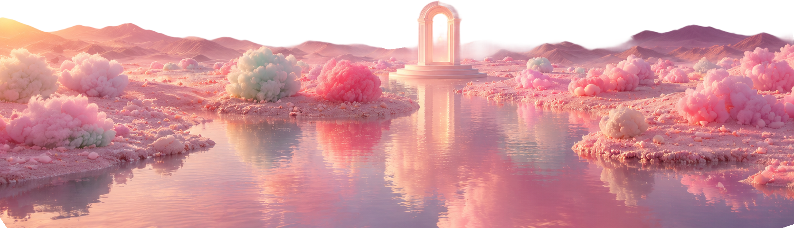

Voice as Material
Sound sculpted into shape, atmosphere and spatial response.
Arkkhe / Applied imaginationSão Paulo · Worldwide
We turn intelligence, space and motion into experiences that respond, evolve and stay with you.
Enter the system↓Tools change.
Human curiosity does not.
Every system starts with emotion, context and intent. The code disappears. The feeling remains.
Four forces.
One responsive world.

Behind every signal,
there is a person.
The most advanced interface is the one you never have to learn. It meets the body, the room and the moment exactly where they are.
Small experiments become new ways to feel, move and connect.
Sound sculpted into shape, atmosphere and spatial response.
Invisible relationships made visible through light and movement.
Experiences that evolve with every person who passes through.
Have a question no one has built for?